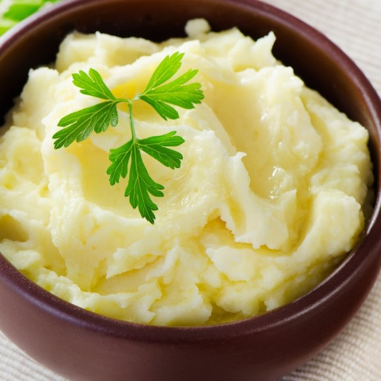

Smashed Potatoes

Description
Smashed potatoes is a very simple yet delicious dish. It can be served with beef, chicken or alone.
For this recipe you will need only six ingredients and will probably take you half an hour to make.
Ingredients
- 4 potatoes
- 200ml of milk
- 50gr of butter
- 5gr of nutmeg
- Salt (optional)
- Pepper (optional
Steps
- Peel the potatoes and boil them in hot water until they're soft.
- Strain the potatoes and put them pack in the pot.
- Add the milk, butter, nutmeg, salt, pepper and start smashing the potatoes with a potato masher.
- Serve.